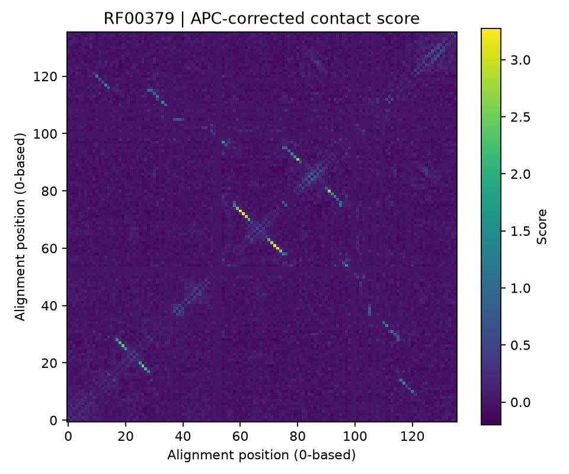

Predict contacts · contacts
Rank pairs of alignment positions by the strength of their couplings:
adabmDCA contacts -p model/params.dat.gz -o contacts
Positions in contact in the three-dimensional structure tend to co-evolve, and a Potts model captures this as strong direct couplings, separated from the indirect correlations that propagate through chains of contacts. The score of a pair is the Frobenius norm of its coupling block, corrected for the background of each position (average product correction, APC).
Inputs
| Option | Meaning |
|---|---|
-p, --path_params |
params.dat(.gz) or ptt.h5 |
-d, --data |
Without -p: compute scores from the alignment with the fast mean-field approximation instead of a trained model |
--pseudocount |
Mean-field regularization (default 0.5) |
-o, -l |
Output folder and optional file prefix |
The mean-field route needs no training and is useful as a quick baseline; models trained by maximum likelihood (bmDCA) usually give better contact predictions.
Outputs
| File | Content |
|---|---|
contact_map.csv |
Columns position_i, position_j, score for every pair |
contact_map.txt |
The same, headerless (format of earlier versions) |
contact_map.npy |
The full symmetric \(L\times L\) score matrix, zero on the diagonal |
contact_map.json |
Method and model metadata |
contact_map.png |
The score matrix as an image |
Positions are zero-based alignment columns.

RF00379: bright pairs have high scores. The anti-diagonal stripes are the base-paired helices of the RNA secondary structure.
Interpreting the scores
- Scores rank pairs; they are not probabilities. The usual way to use them is to take the top \(L\) or \(L/2\) pairs, excluding pairs closer than a few positions along the sequence (\(|i-j| \le 4\) for proteins), which are trivially correlated.
- Gaps are excluded from the norm, and the couplings are first moved to the zero-sum gauge, so the score does not depend on how the model split its parameters between fields and couplings.
- Sparse models (
eaDCA,edgeDCA,edDCA) give a score of exactly zero to pairs without couplings; their non-zero pairs are a candidate contact list by construction. - Alignment positions must be mapped to residue numbers of a structure before comparing with a contact map.
In Python
from adabmDCA import load_model, predict_contacts
model = load_model("model/params.dat.gz", alphabet="rna")
contacts = predict_contacts(model=model)
pairs = contacts.to_long_dataframe() # position_i, position_j, score
top = pairs[pairs.position_j - pairs.position_i > 4].nlargest(136, "score")
Definition: contact scores.